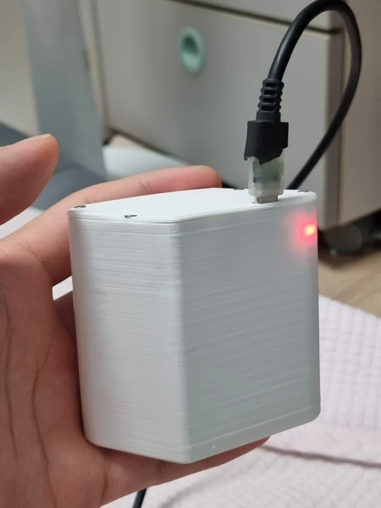
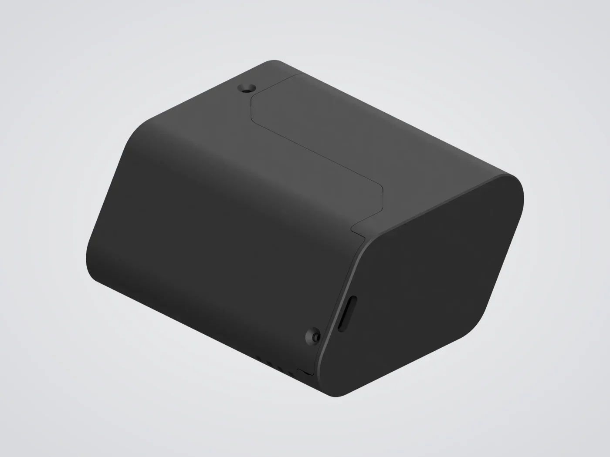
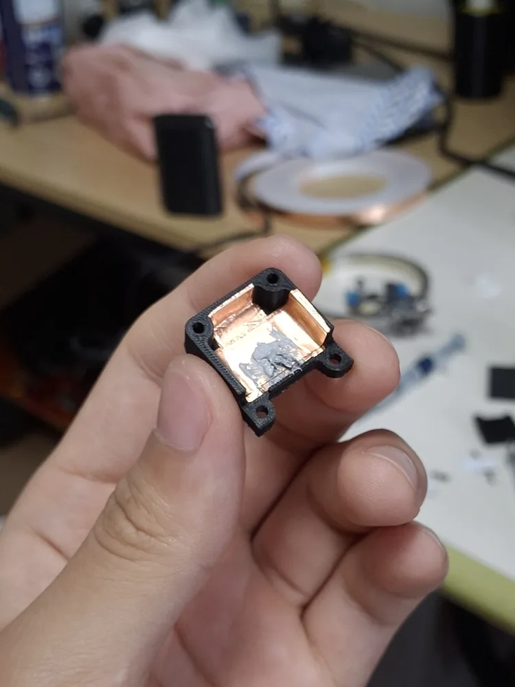

4S Power Bank
실패할 때마다 고쳐
다시 만든 보조배터리
취미로 계속 만들고 있는 4S1P 보조배터리입니다. 셀 4개를 직렬로 묶고, 하우징은 PLA로 출력해 나사로 조립합니다. 버전마다 무엇이 문제였는지 찾아 다음 버전에서 고쳤고, 네 번째 45W 버전은 약 6개월 동안 실제로 썼습니다.

지금까지의 마지막 버전, 45W 보조배터리
취미로 계속 만들고 있는 4S1P 보조배터리입니다. 셀 4개를 직렬로 묶고, 하우징은 PLA로 출력해 나사로 조립합니다. 버전마다 무엇이 문제였는지 찾아 다음 버전에서 고쳤고, 네 번째 45W 버전은 약 6개월 동안 실제로 썼습니다.
지금까지의 마지막 버전, 45W 보조배터리
만든 것아크릴이나 PC로 하우징을 만드는 전자기기에서 영감을 받아, 2mm 투명판을 덮개로 쓰는 하우징을 만들었습니다. 안에는 드릴용 BMS와 100W PCB를 넣었습니다.
문제크고 무거운 데다 내구성도 약해 사실상 쓸 수 없는 프로토타입이었습니다. 고등학생이던 저에게는 투명 소재 가공비도 부담스러웠습니다.
다음에 바꾼 것투명 하우징은 접고, 같은 부품으로 크기와 무게를 줄이는 데 집중했습니다.

유리판 버전 설계
만든 것같은 드릴용 BMS와 100W PCB로 크기와 무게를 크게 줄였습니다. 뚜껑 부품에 PCB와 배터리를 달고(배터리와 BMS는 붙어 있는 설계), 본체를 그 위에 덮어 닫는 구조입니다.
문제부품이 하우징의 넓은 면에 닿지 않고 안쪽 공기로만 식다 보니, 열이 빠지지 못해 내부 PLA가 녹거나 충전 속도가 제한됐습니다. 내구성도 여전히 아쉬웠습니다.
다음에 바꾼 것열을 하우징의 넓은 면으로 보내는 구조와, 하중을 덜 받는 뚜껑 고정 방식이 필요했습니다.


열기판에 써멀 패드를 붙여 하우징의 넓은 면으로 열을 보내고, 하우징 면에는 구리 테이프를 넓게 붙여 하우징 전체가 방열판 역할을 하게 했습니다. 따로 방열 구조를 두지 않았지만 과열 문제는 없었습니다.
크기BMS를 빼고 셀 밸런싱만 넣어 크기를 많이 줄였습니다. 판매용이 아니어서 괜찮다고 판단했고, 셀 전압은 계속 확인하고 있습니다.
내구성뚜껑처럼 닫은 뒤 옆면에서 볼트로 고정합니다. 볼트에 하중이 실리지 않아 이전보다 튼튼해졌습니다.


바꾼 것100W와 비슷한 설계에서 배터리와 PCB를 고정하는 방식을 단순하게 바꾸고, 45W로 충전과 방전이 되는 PCB로 교체했습니다. PCB의 버튼으로 보조배터리를 조작합니다.
결과고정 방식이 단순해지자 길이와 크기가 줄고 내구성도 크게 좋아졌습니다. 출력한 뒤 입대 전까지 약 6개월 동안 실제로 썼습니다. 옆면의 핀은 방열 효과가 크지 않아 디자인 요소에 가깝습니다.
만든 것셀 2개를 병렬로 묶고 5V 3A 충방전 모듈을 회색 출력 케이스에 넣었습니다. 5V 출력 단자에 C타입 단자를 그대로 이어 썼습니다.
문제연결한 기기가 전원을 인식하지 못했습니다. C타입 출력 단자는 CC 핀에 풀업 저항(Rp, 10~56kΩ)이 있어야 기기가 전원을 알아보는데, 이 저항이 없어서였던 것으로 보고 있습니다.

1S2P 15W 보조배터리
만든 것입출력이 모두 되는 보드인 줄 알고 하우징을 만들었습니다. 뚜껑 안쪽에는 구리 테이프를 붙였습니다.
문제기판이 충전 입력만 되는 보드여서 보조배터리로 쓸 수 없었습니다.


셀 3개를 직렬로 묶은 3S 45W 보조배터리의 회로와 케이스를 설계하고 있습니다.